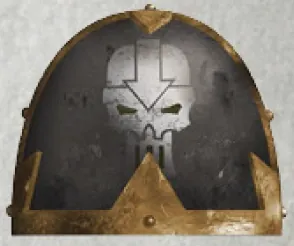
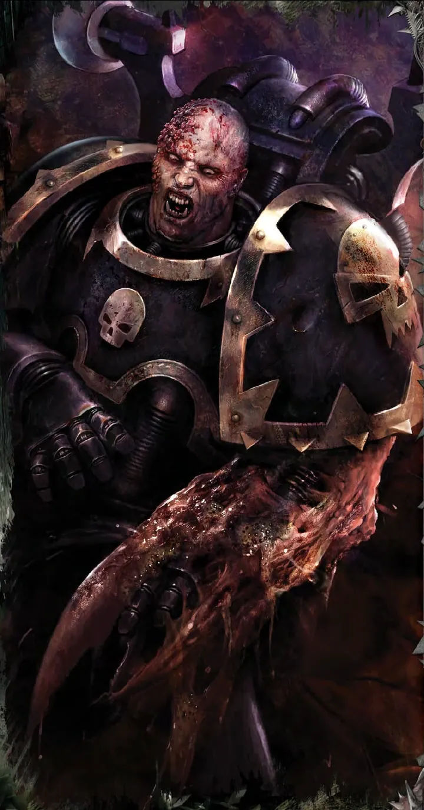
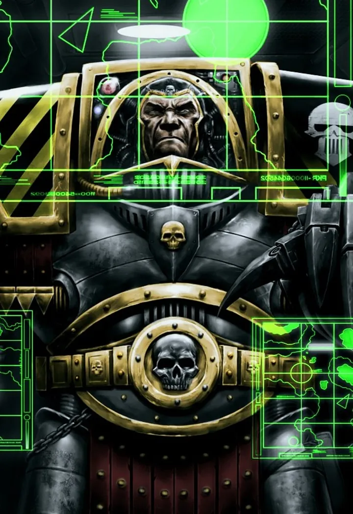
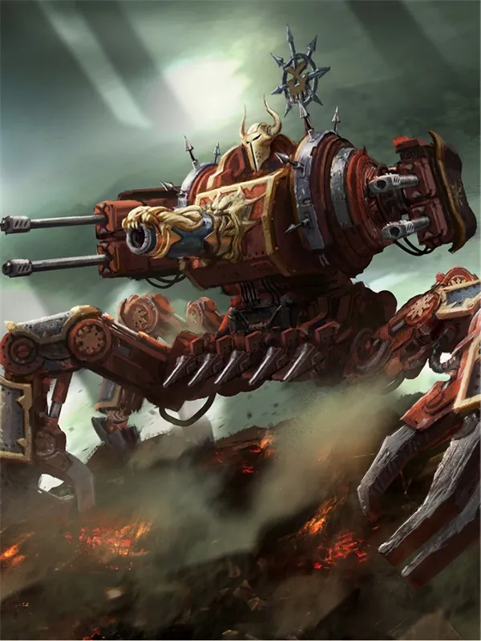

01ภาพรวม

ปรมาจารย์สงครามปิดล้อมผู้ขมขื่น — ใช้เหล็ก ไฟ และคณิตศาสตร์บดขยี้ป้อมทุกแห่ง
02ต้นกำเนิด
Legion ที่ 4 ภายใต้ Perturabo จาก Olympia ถูกใช้ในงานปิดล้อมที่ไม่มีใครชื่นชมจนขมขื่น แล้วทรยศเข้ากับ Horus
03เนื้อเรื่องเจาะลึก
Olympia และบิดาที่ไม่เคยพอใจ
Perturabo ถูกพบบนดาว Olympia และได้รับการเลี้ยงดูโดยทรราช Dammekos เขาไม่มีความสุขกับทั้งดาวบ้านเกิดและจักรพรรดิที่ส่งเขาไปทำภารกิจปิดล้อมที่ไม่มีใครอยากทำ เมื่อ Olympia ก่อกบฏ Perturabo สังหารประชาชนไปราว 5 ล้านคน — จุดที่ไม่มีทางกลับ
Siege of Terra และความแค้นต่อ Dorn
Perturabo นำการโจมตีพระราชวังบน Terra ประลองกับกำแพงของ Rogal Dorn ผู้ที่เขาอิจฉามาตลอด หลังพ่าย Iron Warriors สร้างอาณาจักรป้อมเหล็กบนดาว Medrengard ใน Eye of Terror
04ยุค 30K — ในยุค Great Crusade และ Horus Heresy

ยุค 30K ถูกแยกกระจายไปประจำการทั่วกาแล็กซีและสูญเสียมหาศาลในงานปิดล้อม เป็นผู้นำการโจมตีกำแพงพระราชวังใน Siege of Terra
ดูภาพรวมยุค 30K ทั้งหมดที่ เนื้อเรื่องยุค 30K และความต่างของสองยุคที่ เปรียบเทียบ 30K vs 40K
05นิสัยและวัฒนธรรม
- มองสงครามเป็นงานวิศวกรรม — ไม่สนเกียรติ สนแค่ผลลัพธ์
- ใช้ Daemon Engine (เครื่องจักรที่ปีศาจสิง) และปืนใหญ่มหาศาล
- ปกครองโดย Warsmith
06จุดที่น่าสนใจ
- ดาวปีศาจ Medrengard เต็มไปด้วยป้อมเหล็ก
- ศัตรูตลอดกาล: Imperial Fists
07ความสามารถพิเศษ
สิ่งที่ทำให้ Iron Warriors แตกต่างจากทัพอื่น — ทั้งพลังที่ติดตัวมาทั้งเผ่า/ทัพ และความสามารถของบุคคลสำคัญ
ของทั้งเผ่า/ทัพ

ปรมาจารย์การปิดล้อม
ไม่มีป้อมใดที่ Iron Warriors ทลายไม่ได้ ใช้การคำนวณเย็นชา ปืนใหญ่ และทหารจำนวนมหาศาลเป็นเชื้อเพลิง ยอมเสียชีวิตทหารหลายพันเพื่อชัยชนะ

Daemon Engine และไวรัสกลไก
ผสานปีศาจเข้ากับเครื่องจักร และมี Obliterators ที่ติดไวรัสทำให้ร่างกายหลอมรวมกับอาวุธ

ความขมขื่นที่หล่อเลี้ยง
Iron Warriors ทำงานหนักและสกปรกที่สุดใน Great Crusade โดยไม่ได้รับเกียรติ ความขมขื่นนี้คือเชื้อเพลิงของความเกลียดชังต่อจักรวรรดิ
ของบุคคลสำคัญ

Perturabo
Lord of IronPrimarch อัจฉริยะด้านวิศวกรรมที่ไม่เคยได้รับความรัก ใช้ชุดเกราะ Logos Lathe และค้อน Forgebreaker ปัจจุบันเป็น Daemon Prince บนดาว Medrengard

Vashtorr
ช่างตีเหล็กแห่ง WarpDaemon ช่างตีเหล็กที่ทำงานร่วมกับ Iron Warriors ในเหตุการณ์ Arks of Omen ต้องการครอบครองชิ้นส่วนของ Blackstone Fortress
08หน่วยและบทบาทในกองทัพ
Iron Warriors คือผู้เชี่ยวชาญการปิดล้อมของ Chaos ใช้ทหารจำนวนมากและเครื่องจักรปีศาจ ตำแหน่ง "ช่าง" มีอำนาจสูงมาก

Warsmith
วอร์สมิธผู้นำ Grand Battalion (กองพัน) ของ Iron Warriors ต้องเป็นทั้งแม่ทัพและวิศวกรปิดล้อม เช่น Honsou

Warpsmith
วาร์ปสมิธช่างที่สร้างและควบคุม Daemon Engine — Iron Warriors มีช่างแบบนี้มากที่สุด
Obliterators
ออบลิเทอเรเตอร์Marine ที่ติดไวรัสกลไก (Obliterator Virus) ร่างกายหลอมรวมกับอาวุธ สร้างปืนออกมาจากเนื้อตัวเองได้

Havocs
ฮาวอคหน่วยอาวุธหนักที่ Iron Warriors ใช้มากที่สุดในการยิงถล่มป้อม

Siege Engines
เครื่องจักรปิดล้อมDefiler, Forgefiend และปืนใหญ่ปีศาจ ใช้ทำลายกำแพงที่ Imperial Fists สร้าง (ศัตรูคู่แค้นของ Iron Warriors)
หน่วยทั่วไปของ Chaos Space Marines (Sorcerer, Warpsmith, Dark Apostle ฯลฯ) ดูได้ที่ หน่วยและบทบาทของ Chaos Space Marines
09วีรกรรมและเหตุการณ์สำคัญ
Iron Cage
ดักทำลาย Imperial Fists
Hydra Cordatus
บุกป้อมจักรวรรดิเพื่อชิงเจเนซีดของ Space Marines
Infinite Citadel
Perturabo ลงสนามรบด้วยตัวเองครั้งแรกในรอบหลายพันปี
10ตัวละครสำคัญ
Perturabo
Primarch (Daemon Primarch)Lord of Iron
11ยุค 40K — สหัสวรรษที่ 41
ยุค 40K Iron Warriors ออกปิดล้อมป้อมของจักรวรรดิ และรับจ้าง Warband อื่นทำสงครามปิดล้อม
12เนื้อเรื่องล่าสุด (Era Indomitus / M42)
Perturabo นำแผน Infinite Citadel เปลี่ยนดาวเป็นป้อมแล้วรุกคืบสู่ Terra เริ่มจากการบุก Cadian Gate
หลังการเกิด Great Rift ปฏิทินของจักรวรรดิคลาดเคลื่อน เหตุการณ์ยุคปัจจุบันจึงมักระบุเพียง 'M42' ไม่มีปีที่แน่นอน
13แกลเลอรี